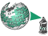

Research
- Information Retrieval and Search
- Information Extraction and Computational Linguistics
- Data Mining and Machine Learning
- Software Engineering and Tool Development
Information Retrieval and Search
Retrieval Models
[2011 - 2013]
Interactive map to overview and compare the characteristics of well-known retrieval models.
Interactive map to overview and compare the characteristics of well-known retrieval models.
Plagiarism Detection
[2005 - today]
Technology for automated plagiarism detection.
[project] [service] [video]
Technology for automated plagiarism detection.
[project] [service] [video]
Information Extraction and Computational Linguistics
ArguAna for the Web
[2016 - today]
Argumentation analysis for the web.
[project] [service: argument search] [api] [demo: essay scoring]
Argumentation analysis for the web.
[project] [service: argument search] [api] [demo: essay scoring]
Data Mining and Machine Learning
Digital Engineering
[2010 - today]
Data mining in artificially generated data to support modeling and simulation tasks.
Data mining in artificially generated data to support modeling and simulation tasks.

Wikipedia Vandalism
[2007 - today]
Research for the analysis and detection of vandalism on Wikipedia.
[project]
Research for the analysis and detection of vandalism on Wikipedia.
[project]
Software Engineering and Tool Development
Webis@Github
[2013 - today]
Webis github account that hosts the source code for reproducing our research.
Webis github account that hosts the source code for reproducing our research.